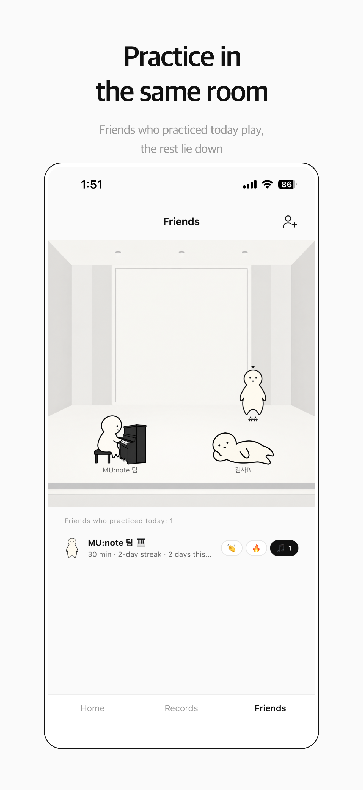

Why does practice motivation fade?
Usually because one of three needs stops being met. Researchers who followed music learners for ten years asked those who had stopped playing how they felt when they quit, compared with when they were most engaged in high school. When they stopped, they felt less capable, less connected to other people through music, and less in control of their own playing. Their own explanations for quitting pointed to the same three things.
That gives you three levers:
| What fades | What it feels like | What helps |
|---|---|---|
| Feeling capable | "I'm not getting any better" | Make progress visible over weeks |
| Feeling connected | "I practice alone and nobody notices" | Play with or alongside others |
| Feeling in control | "I only play what I'm told" | Choose part of today's goal yourself |
How do you make your progress visible?
Write it down, then look back over weeks, not days. Day to day, practice rarely feels like it changes anything, which is one of the main reasons people lose heart. A record is not for capturing big breakthroughs; it shows how steadily you practiced and how much practice it took before something changed. Read four weeks of entries side by side and the change becomes visible.
You do not need much: the date, what you worked on and how long you played. A printable practice log or a short practice journal is enough.
What should you do on days you don't feel like practicing?
Keep the habit, shrink the session. Many players practice in bursts on the days they feel like it and then skip several days; a short session every day keeps the thread unbroken and is easier to restart than a long one. On a low day, open the case, play one thing you enjoy, and stop if you need to. You kept the habit, and that is the point. For how much is enough at each level, see how long to practice each day.
Does practicing with others help?
Yes — feeling connected through music is one of the three needs. Lessons, an ensemble, a study group or a friend who also plays all count. Even when you practice alone, knowing that friends are practicing too makes the room feel less empty.

In MU:note's practice room, friends who practiced today appear playing their instruments, and you can send them a reaction. You choose what friends see, and piece names and notes are never shown to them. Friends is for signed-in members.
How do you keep practice your own?
Choose today's goal yourself. A teacher's assignments set the direction, but deciding which passage you will finish today, or which piece you play first for fun, gives you back a sense of control. Owning the plan, even a small part of it, makes it easier to start.
Why shouldn't you punish missed days?
Because guilt makes the next session harder to start, not easier. A missed day is information — you were tired, busy or stuck — not a sign that you lack discipline. Look at what got in the way and adjust the plan.
MU:note is built on the same idea: it never blames you for days you did not practice. Its streak counts days with at least 20 minutes of playing, and it only records what you did.